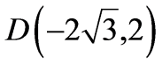
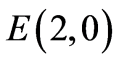

2026年北京市中考数学试卷 · 数学解答题 第28题
28. 对于不共线的三点A，B，C，连接 ，
， ，并作劣弧
，并作劣弧 ，使得所在圆的圆心在过点A且与
，使得所在圆的圆心在过点A且与 平行的直线上，称由，和组成的图形为单弧三角形，记作
平行的直线上，称由，和组成的图形为单弧三角形，记作 ，其中所在圆的圆心称为的弧心．
，其中所在圆的圆心称为的弧心．
在平面直角坐标系 中，
中，

（1）如图1，点 ，
， ，
， ，直接写出的弧心的坐标及的长；
，直接写出的弧心的坐标及的长；
（2）如图2，点

，
，当 的弧心为O时，求点F的坐标；
的弧心为O时，求点F的坐标；（3）已知点 ，对于平面内的点N，存在点P，Q满足
，对于平面内的点N，存在点P，Q满足 和
和 的弧心均为O，
的弧心均为O， 和
和 都不是钝角三角形，且
都不是钝角三角形，且 ，记N的横坐标为t，直接写出t的取值范围．
，记N的横坐标为t，直接写出t的取值范围．